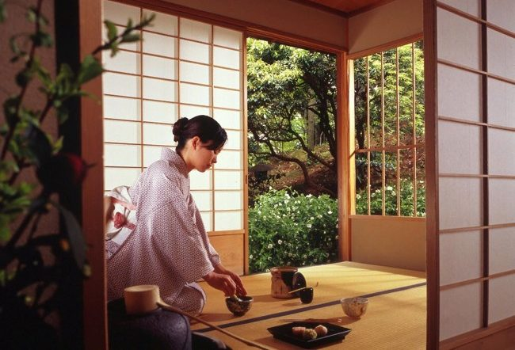
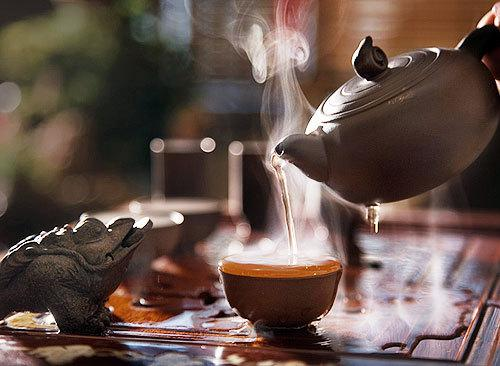
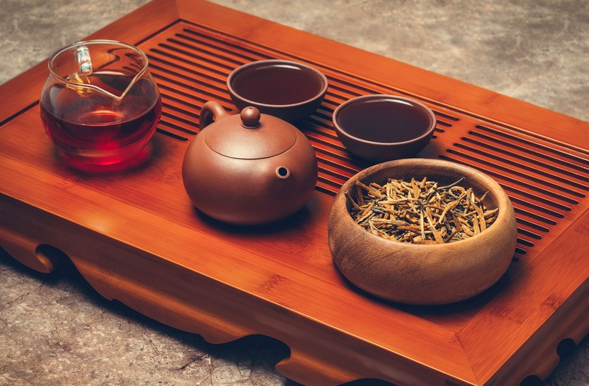

The Art of Tea



"Gongfu Cha" translates to "The art of enjoying tea"
"Gongfu" signifies the art of doing something well, flawless highest mastery, which is why this tea ceremony in China represents philosophy — a person must put in effort, time, concentration, and care to create their genuine tea experience, as an art.
© NatySurise
Tea is enjoyed in China with a sense of leisure, without haste.
Tea is not simply consumed as a beverage in China; it is regarded as a significant part of culture and social life. There are numerous methods of preparation and consumption, along with various tea ceremonies.